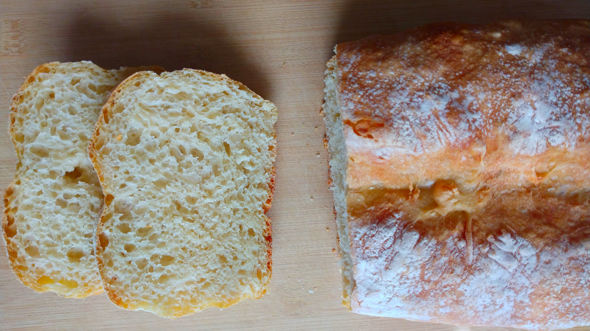

Pan Sin Amasar
- Preparación: 10 min
- Tiempo de levado: 12 + 2 h
- Horneado: 30-35 min
- Porciones: 1 hogaza
INGREDIENTES
- 3 tazas (400 g) de harina de trigo para pan o de todo uso
- ¼ cucharadita (1 g) de levadura seca
- ½ cucharada (9 g) de sal
- 1 ½ tazas (375 g) de agua a temperatura ambiente
DESCRIPCIÓN
Este es el pan de más fácil elaboración que conozco. Sólo son necesarios cuatro ingredientes y un poco de planeación, pues el primer levado de la masa es más largo que para otros panes. Personalmente, me gusta preparar la masa antes de irme a la cama y dejarla levando toda la noche. El resultado es un pan de corteza firme y miga bien hidratada, excelente opción para hacer sándwiches o para untar con mermelada.
INSTRUCCIONES
- En un recipiente profundo mezclar la harina, levadura y sal. Luego agregar el agua y mezclar con una cuchara de madera hasta obtener una masa bastante pegajosa.
- Cubrir el recipiente con plástico y dejarlo reposando a temperatura ambiente por un tiempo de entre 12 y 18 horas. Transcurrido éste tiempo, la superficie de la masa deberá tener burbujas.
- Cubrir con papel para hornear un molde para pan, de aproximadamente 23x12.5 cm (9x5 in).
- Después del primer tiempo de levado, transferir la masa a una superficie ligeramente enharinada. Con las manos también enharinadas, doblar la masa sobre si misma, dándole forma aproximada de rectángulo. Colocar la masa con la costura hacia abajo en el molde para pan que hemos preparado.
- Cubrir la masa con plástico, dejando espacio para que leve nuevamente. Dejarla reposar a temperatura ambiente otras 1.5 - 2 horas o hasta que duplique su tamaño.
- Cuando la masa casi haya duplicado su tamaño precalentar el horno a 230°C (450°F). Finalmente, cuando la masa esté lista, espolvorear con un poco de harina y hacer un corte profundo a lo largo, usando un cuchillo bien afilado. Este corte le permitirá seguir levando mientras se hornea.
- Hornear 30 - 35 minutos o hasta que la corteza de la hogaza se torne dorada. Desmoldar y dejar enfriar totalmente sobre una rejilla antes de servir.
Notas
- Como con todos los panes hechos con levadura, es importante llevarlo a una rejilla de enfriamiento y dejarlo enfriar totalmente antes de partirlo, comerlo o almacenarlo.